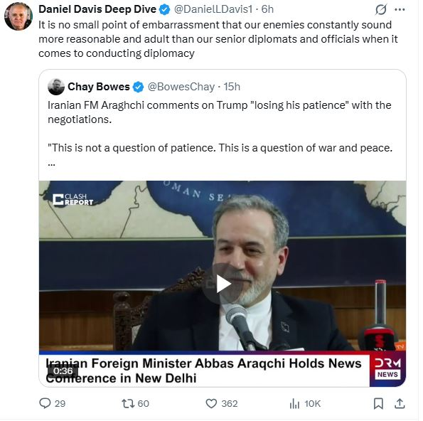
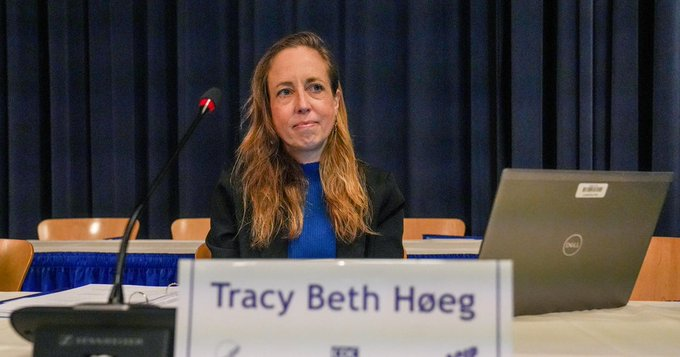
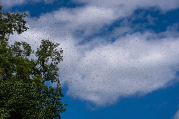
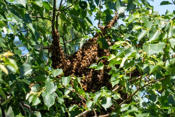
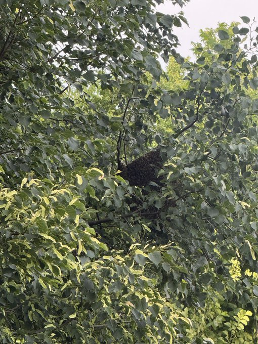
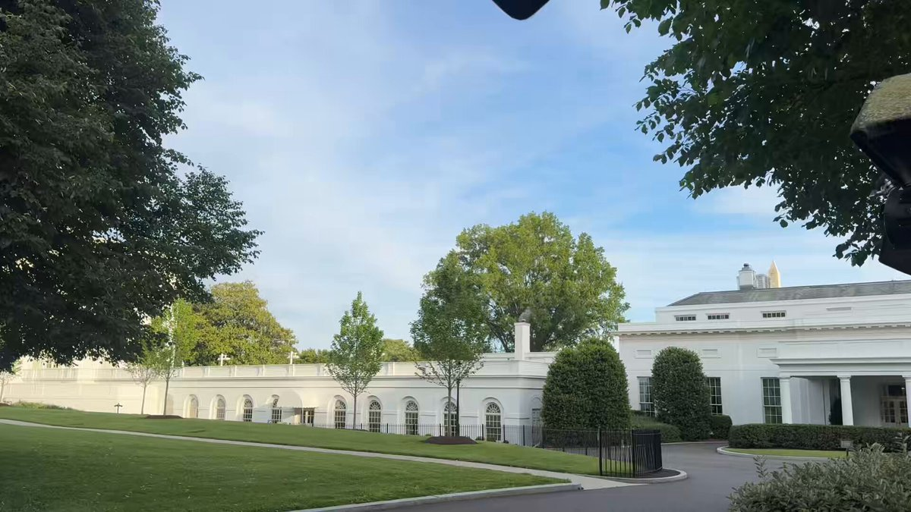
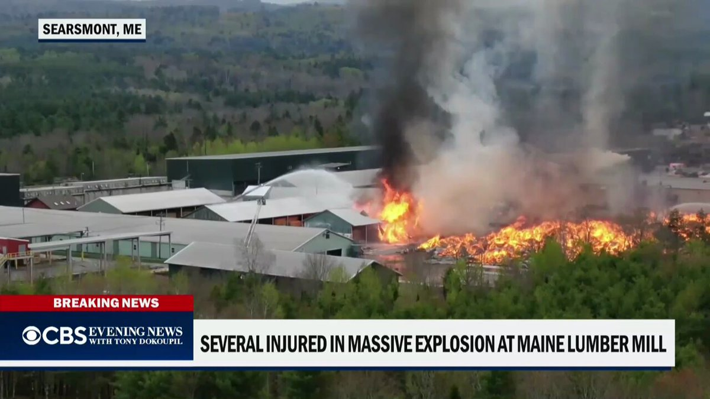
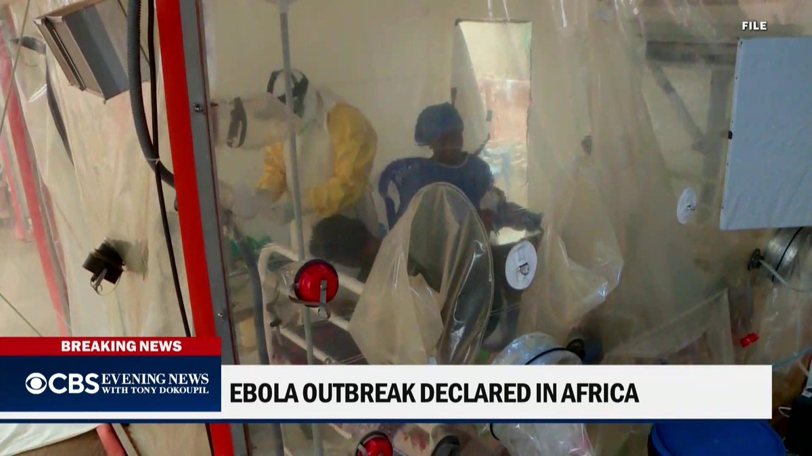
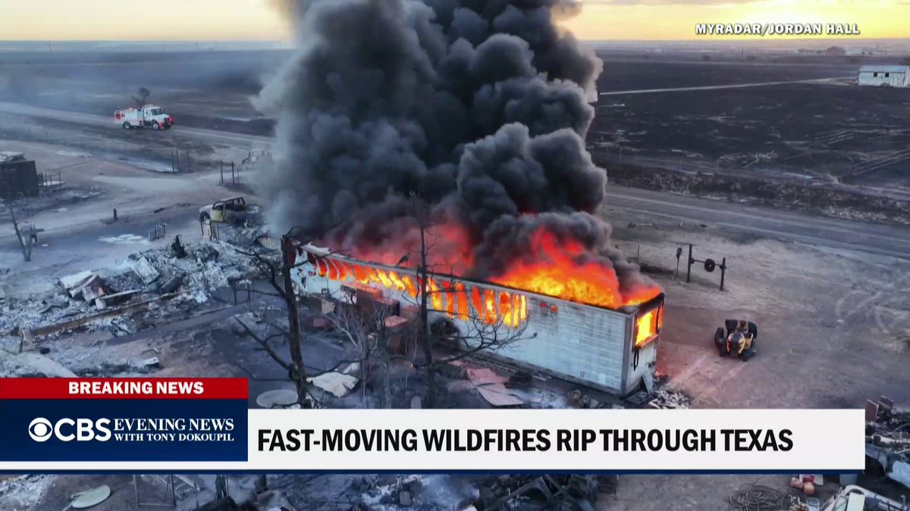
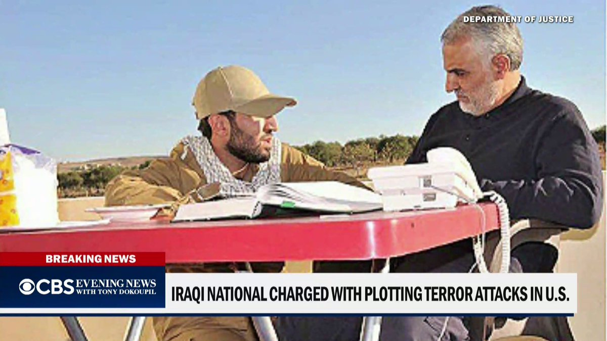

@Tasnimnews_Fa
📝 原文: Raising the Palestinian flag atop the Eiffel Tower in Paris in support of the oppressed people of Gaza
🇨🇳 译文: 在巴黎埃菲尔铁塔顶升起巴勒斯坦国旗，支持加沙受压迫人民

🕒 2026-05-16T05:59:32+00:00
| 来源 | 旧窗口内数量 | 本次新增 | 本次淘汰 | 当前窗口内共有 |
|---|---|---|---|---|
| 推文 + Dawn 新闻 | 0 | 31 | 0 | 31 |
| ARY News | 0 | 0 | 0 | 0 |
注：淘汰数 = 旧窗口内数量 + 本次新增 - 当前窗口内共有












暂无文章。